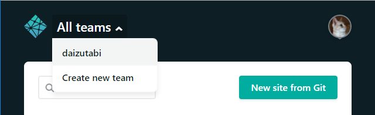

DNS Zonesからネームサーバーを設定する方法
Posted on 2017年12月21日 (木) in Pelican
2017/12/20に，ブログの公開をGitHub PagesからNetlifyに移行した件を書きました．ただ，その時の方法だと，最初にアップしたサイトが特権的な扱いを受けて，後続のサイトと非対称な形になってしまいました．少し気になっていたところ，DNS zonesから再設定することで，非対称性を解消できました．
以下，順を追って説明したいと思います．次の前提で話を進めます．
- カスタムドメインとサイトをすでに登録していたので，すべて削除しました．
- お名前.comで
daizutabi.netを取得済です． - GitHub上の「ブログ」レポジトリと「Pythonパッケージの作り方」レポジトリを公開していきます．
（注）具体的な名前で説明したほうが分かりやすいと思いそのまま書いています．ドメイン名やレポジトリ名は適宜置き換えを行ってください．
0.1 DNS zonesの設定
NetlifyにGitHubアカウントを使ってログインします．

左上のAll teamsからdaizutabiを選択します．

メニューからDNS zonesをクリックします．

Add a domainをクリックします …
Continue reading